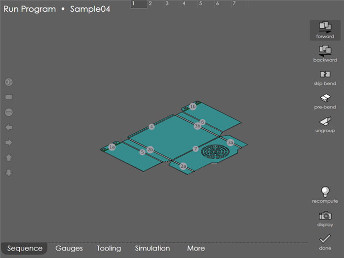
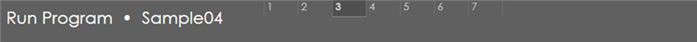
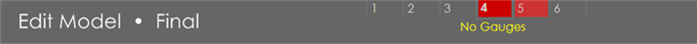
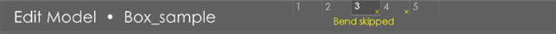
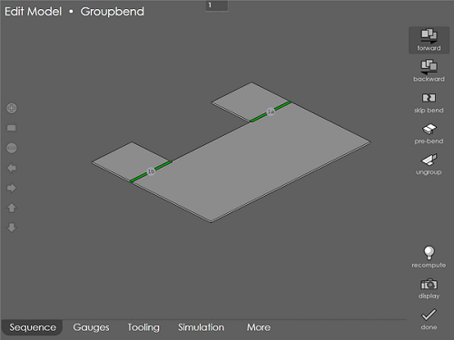
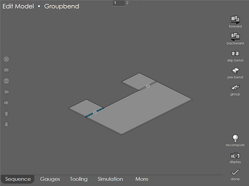
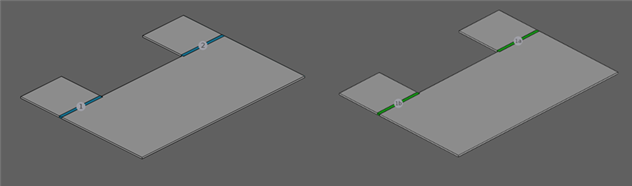
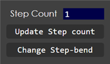
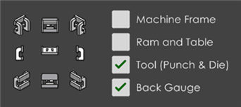

Edit Sequence
When a program is opened for editing, more options are available. A 3D view of the model is shown, along with some options available from the tabs on the bottom:

Menu options
Forward / Backward
Using this option, one can set up a sequence by folding up, starting from a flat model. Touch the Forward button, and then touch the bend lines in the flat. As you touch them, the bends are folded up and this becomes the bending sequence. It is also possible to sequence backwards by touching the Backward button. In this case, start with a fully folded model, and indicate the bends in reverse sequence.
Bend Navigator
When a 3D model is edited, the Bend Navigator is visible on the top of the screen. This displays the total number of bends in the part, and the bend you are currently working on. For example, this image of the bend navigator shows that there are 4 bends, and we are working on the third bend:

| Touch any of the numbers in the bend navigator to quickly jump to that bend. |
If there are any problems with some of the bends, those bend cells are displayed in a different color. The image below shows a navigator with 6 bends; we are currently working on the second bend, while bends 4 and 5 have some problems that need to be fixed:
Touching a bend cell that has a problem displays text indicating what the problem is. In this case, the issue with bend 4 is that no back-gauges are being used to position the workpiece:

The bend navigator provides a quick overview of the model that is constantly kept updated while editing the gauges, sequence or tooling. If there are no red cells displayed in the navigator, the model is ready to go.
Skip Bend
Pressing this button will toggle the current bend’s Skip state. Bends that have been skipped have a small dash in a circle drawn near their bend sequence number in the 3D model. Also, a small x is drawn near the bend number in the bend status window on the top. Tapping this bend will also display Bend Skipped. Note that bends that have been skipped can be sequenced just like any other, so that accurate collision checks can be done with the correct folded/unfolded state of the model.

Pre-Bend
Use this command to add a pre-bend. Type in the interior angle of the pre-bend to add it. This adds the pre-bend. Then, it must be sequenced using the forward or backward sequence commands. Then, switch to the tooling page, and do a recompute (if recompute is done from the sequence page, the manually computed sequence is over-ridden).
To remove the pre-bend on a bend line, go to the sequence page, select that bend using the bend numbers on the top and click on the pre-bend again.
Grouping and Ungrouping Bends
Use Ungroup to ungroup bends, which is available whenever a grouped bend is selected as the current bend.

Clicking this button ungroups the currently selected bend (and the bend-count will change on the top). See picture below which shows the result after an ungroup and subsequent recompute.

A set of groupable single bends can likewise be grouped together.
-
Use the forward or backward sequence tools to move these bends together in the sequence (they should be consecutive).
-
Click on the group command and tap on the bends to be grouped. They will all be highlighted in blue. Also, the group button is highlighted to indicate that you are now in the group mode
-
After you are done selecting all bends to be grouped, click on the group button again. The bends are grouped together and switches out of the group mode. See picture below which shows the result (after doing a subsequent recompute).

Step Count
step bends can now be exploded into individual bends. Pressing this button brings up the dialog shown in the picture below.

Touch the Update Step count to modify just the step count or press the Change Step-bend button to convert the step bend into a single radius bend. You can then sequence, tool-up or correct the bends individually.
Recompute
Pressing the Recompute button causes to compute a bending sequence for the model. This computed sequence will overwrite any sequence set manually, so use this only when you want to completely overwrite the sequence changes made with the standard computed one. This also brings up the Select Tools dialog for further modifications. For more information on this dialog see Recompute in the tooling page.
Display
Pressing the Display button displays a panel that is used to control some display options. You can use the 9 icons on the left to position the camera to any one of 5 orthogonal directions (top, left, right, front, back) along with 4 isometric directions (front-left, front-right, back-left and back-right):

The four switches on the right can be used to turn on or off various layers of the machine display. These layers will turn on and off automatically as you switch between various operation modes. However, you can use these switches to further control the display.
| You can also rotate the 3D view of the model by pressing on any blank background area of the model and dragging. |
Zooming and Panning in the 3D View
In the 3D view, it is always possible to zoom in or out, or pan the view in all the four directions. To perform these operations, use the semi-transparent buttons along the left edge of the screen. Use the Zoom All button (the second button in this set) to quickly centre the view and display the entire model.